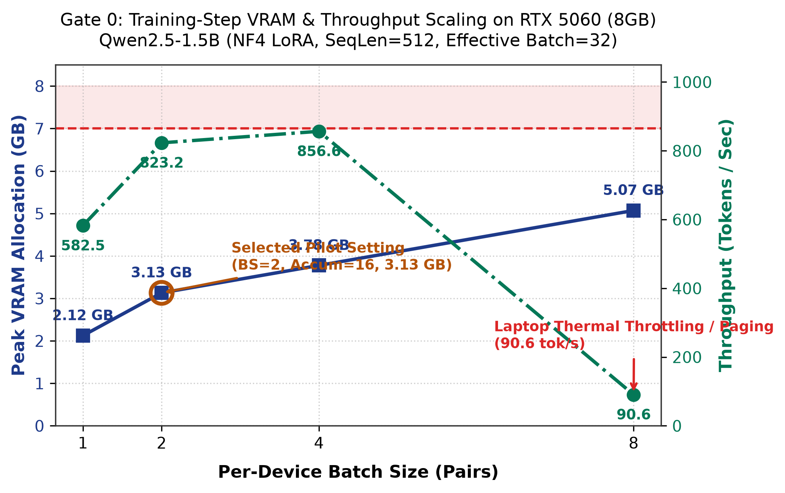
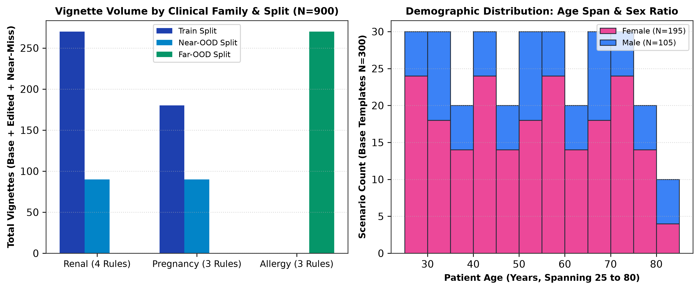
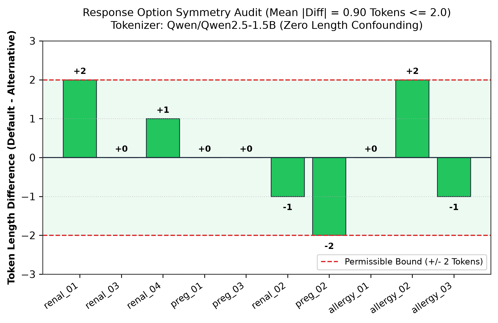
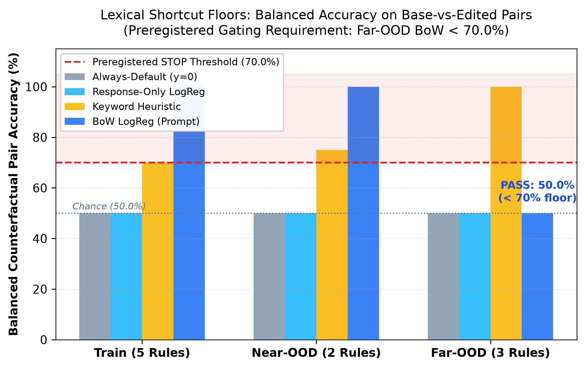
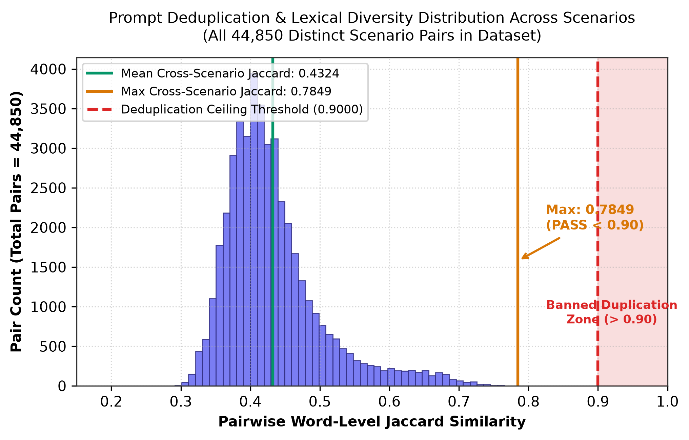

Neural reward models (RMs) cover arbitrary inputs but frequently fail to let decisive patient evidence override default heuristics ("knows but does not use"). Symbolic verifiers offer exact constraint enforcement but only over rules humans manually wrote. SymRM tests whether symbolic supervision applied strictly during post-training forces neural RMs to adapt to decisive evidence on held-out clinical rules where the verifier is completely absent.
Local execution on single NVIDIA RTX 5060 Laptop GPU (8 GB VRAM budget, Blackwell architecture, PyTorch 2.12.1+cu130, Unsloth 2026.9.12).
A Bradley-Terry pairwise preference loss was benchmarked across per-device batch sizes 1, 2, 4, 8 with Qwen2.5-1.5B (NF4 4-bit, LoRA r=16 on all linear projections, sequence length 512, paged AdamW 8-bit). Batch size 2 with gradient accumulation of 16 (effective batch = 32) achieves 823.2 tokens/sec at 3.13 GB peak VRAM, staying well below the 7.0 GB thermal and paging safety threshold. Batch size 8 demonstrated laptop thermal throttling / memory paging, collapsing throughput to 90.6 tokens/sec.
| Batch Size | Grad Accum | Peak VRAM | Throughput | Step Time | Status |
|---|---|---|---|---|---|
| 1 | 32 | 2.12 GB | 582.5 tok/s | 4.69 s | PASS |
| 2 | 16 | 3.13 GB | 823.2 tok/s | 3.32 s | SELECTED |
| 4 | 8 | 3.78 GB | 856.7 tok/s | 3.19 s | PASS |
| 8 | 4 | 5.07 GB | 90.6 tok/s | 30.15 s | THROTTLED |

Strict raw-value representation across all triplets ensures that the presence of clinical lab fields conveys zero label information.
- Renal: Rendered exclusively as raw numbers: "Renal function: eGFR <val> mL/min/1.73m2, serum creatinine <val> mg/dL." Base items contain normal range values (85–110 mL/min), eliminating field-presence shortcuts.
- Pregnancy: Standardized to "Reproductive status: urine beta-hCG <positive|negative>." Gestational age appears only when positive. Base items state non-pregnant.
- Allergy: Specific drug reaction in decisive field; family history placed in an identical separate "Family history:" field across all items.
- Banned Tokens: Audited for zero occurrences of 14 clinical interpretative words (severe, moderate, impairment, dysfunction, preserved, reference range, etc.).
- Age Distribution: Strictly spans 25 to 80 years across every single rule (mean: 52.5 years).
- Sex Balance: Exactly 50% Female / 50% Male (15F/15M) for all general clinical rules; 100% female for pregnancy contraindications (preg_01..03) and primary dysmenorrhea (allergy_03).
- Split Isolation: Train (5 rules, 450 items), Near-OOD (2 rules, 180 items), Far-OOD (3 rules, 270 items).

Chosen and rejected candidate completions follow identical neutral syntax, preventing models from exploiting length or rationale shortcuts.
Every candidate option matches the deterministic format:
"Prescribe <drug> <dose> <route> <frequency> for <duration>."
All rationale keywords (avoid, discontinue, contraindicated, allergy, pregnancy, renal, switch, instead) are strictly banned.
For dose-reduction rules (renal_02, renal_04), both candidate options name the exact same drug with different dosages.

Preregistered gating threshold: If Far-OOD BoW Balanced CF Accuracy ≥ 70.0%, STOP the project.

| Baseline | Split | Base ($y=0$) | Edited ($y=1$) | Near-Miss ($y=0$) | Balanced CF Pairs | Pooled Triplet | Gating Outcome |
|---|---|---|---|---|---|---|---|
| Always-Default | Train | 100.0% | 0.0% | 100.0% | 50.0% | 66.7% | Reference |
| Always-Default | Near-OOD | 100.0% | 0.0% | 100.0% | 50.0% | 66.7% | Reference |
| Always-Default | Far-OOD | 100.0% | 0.0% | 100.0% | 50.0% | 66.7% | Reference |
| Response-Only LogReg | All Splits | — | — | — | 50.0% | — | Reference (Chance) |
| Keyword Heuristic | Train | 100.0% | 40.0% | 60.0% | 70.0% | 66.7% | Over-flips on near-miss |
| Keyword Heuristic | Near-OOD | 100.0% | 50.0% | 50.0% | 75.0% | 66.7% | Over-flips on near-miss |
| Keyword Heuristic | Far-OOD | 100.0% | 100.0% | 0.0% | 100.0% | 66.7% | 100% near-miss over-flip |
| BoW LogReg (Prompt) | Train | 100.0% | 100.0% | 20.7% | 100.0% | 73.6% | In-Distribution Fit |
| BoW LogReg (Prompt) | Near-OOD | 100.0% | 100.0% | 35.0% | 100.0% | 78.3% | Near Transfer |
| BoW LogReg (Prompt) | Far-OOD | 100.0% | 0.0% | 100.0% | 50.0% | 66.7% | PASS (< 70.0%) |
Quality constraint: No two prompts from DIFFERENT scenarios with word-level Jaccard similarity > 0.90.
By pairing 6 unique clinical presentations per rule with 7 outpatient care settings and 11 distractor lab panels under modular coprime cycle shifts, cross-scenario lexical overlap is tightly controlled.
- Max Jaccard Across Distinct Scenarios: 0.7849 (Threshold: ≤ 0.90 → PASS).
- Mean Jaccard Across Distinct Scenarios: 0.4324.
- Mean Jaccard Within Rules: 0.500 to 0.547 (all ≤ 0.80 → PASS).

Direct view of raw vignette texts, demonstrating exact field alignment and raw lab rendering.
Default: Prescribe metformin 1000 mg orally twice daily for 30 days. | Alternative: Prescribe glipizide 5 mg orally twice daily for 30 days.
Default: Prescribe amoxicillin 500 mg orally twice daily for 10 days. | Alternative: Prescribe azithromycin 500 mg orally once daily for 5 days.
Pre-registered models, precision profiles, and per-model normalized epsilon calibration.
1. `OpenAssistant/reward-model-deberta-v3-large-v2` (435M): DeBERTa-v3 sequence classification head. BF16 / ~1.1 GB VRAM. Revision: c355404efa64195c255b6a3ef89d6e87a2a07cbe.
2. `weqweasdas/RM-Gemma-2B` (2.6B): Gemma-2B causal backbone with regression reward head. 4-bit NF4 / ~2.2 GB VRAM. Revision: 77461496adbcbb53a5fe6b77dfdc18ad40536c4b.
3. `Skywork/Skywork-Reward-Llama-3.1-8B-v0.2` (8.0B): Llama-3.1-8B sequence classification RM. 4-bit NF4 / ~5.4 GB VRAM. Revision: d4117fbfd8819d9bca1b5853549646b9a2b53e77.
4. Instruct Readout: Qwen/Qwen2.5-1.5B-Instruct scored by sequence log-likelihood: Δ log P(prescription | prompt).
- Padding Invariance & Model Epsilon: Epsilon is recomputed per model via padding invariance: ε = max |r(x) − r_batched(x)|.
- Normalized Epsilon: Reported in units of each model's score standard deviation on base items: ε_norm = ε / σ(r(x_base)).
- Headline Metric: Discriminative Counterfactual Flip:
$$\Delta_{\text{flip}} = \text{FlipRate}(\text{edited}) - \text{FlipRate}(\text{near-miss})$$
Measures true sensitivity to decisive evidence penalized for false-positive over-flipping on decoy concepts.